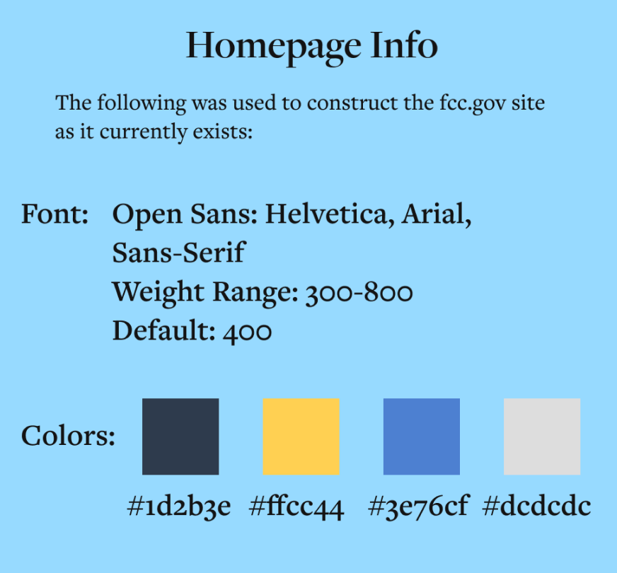
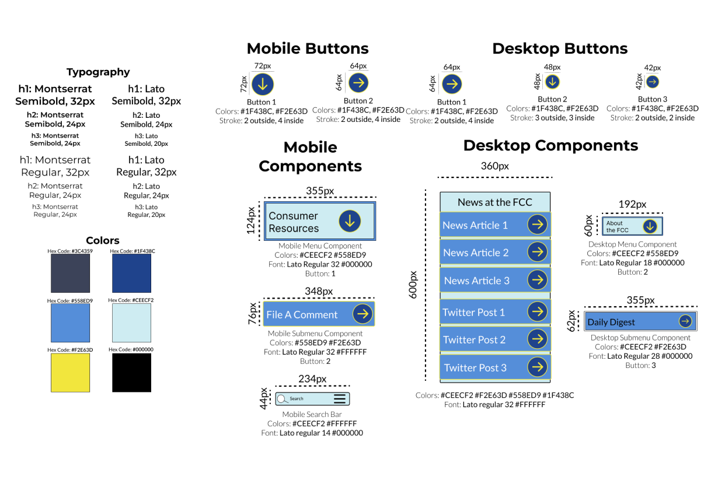

Streamlined Navigation Clear Information and
Easy Access to Resources
Modernizing the FCC Website: Enhancing Consumer Experience
Researching User Behavior: Informing the FCC Redesign with Real Insights.
Conducting user interviews and tests to understand how consumers interact with the FCC website, I refined a user flow for key tasks such as finding the Do-not-call list, paying licensing fees, and filing a complaint.
Copy Heavy
Unclear Language
Uncertain Hierarchy of Information
Consumer Resources
Ill-Defined
Evaluating the FCC
Website's Design:
a Heuristics Analysis
To ensure the redesigned website was visually appealing & user-friendly, I conducted a heuristics analysis focusing on typography, color, and layout. I was able to identify areas for improvement and make informed decisions to revise the site's design.
#1D2BE #FFCC44 #3E76CF #DCDCDC#1D2BE #FFCC44 #3E76CF #DCDCDC#1D2BE #FFCC44 #3E76CF #DCDCDC#1D2BE #FFCC44 #3E76CF #DCDCDC#1D2BE #FFCC44 #3E76CF #DCDCDC#1D2BE

Addressing Pain Points on the FCC Website:
Understanding a Solution
Through research, I recognized the need for a more consumer-friendly approach to the FCC website. Through careful analysis, I developed a comprehensive redesign plan that addressed the site's shortcomings and transformed it into a more intuitive and user-friendly platform.
Redefining the FCC Website for Consumer Experience:Streamlined Copy, Clear Hierarchy, Improved Consumer Access.
With insights gained from user research, I created mockups and mid-fidelity wireframes. These prototypes were tested to refine the design further. Additionally, I developed a style guide consistent with the consumer-friendly approach I was aiming for based on the identified problems.

The Final Iteration of the RedesignIncorporating Data-Driven Design and User Feedback
The final iteration of the redesign prioritizes consumer needs based on data, user interviews, and heuristics analysis, while retaining the original information of the website. By adding components and buttons for better functionality, the redesign delivers an optimal user experience.

Back to Home
A well-known quote, contained in a blockquote element.